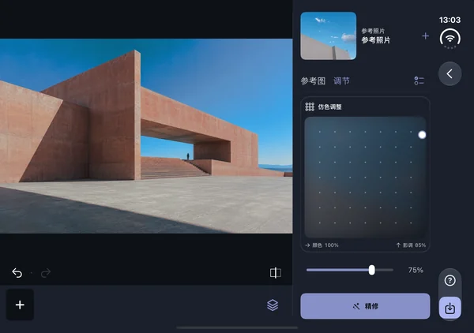
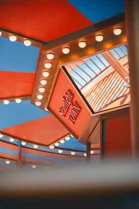

怎样用参考照片给自己的照片仿色？
从选参考、调整强度，到检查肤色与明暗。也说明仿色与追光各自能做什么。
参考图仿色与照片编辑
Apple 平台照片编辑器
iPhone · iPad
调整时，照片与工具始终在眼前。展开 Duo 横向并排编辑，转为竖向时调整区移到底部，当前编辑继续保留。



从局部调整、滤镜叠加，到风格方案与图层。按照片需要选择工具，继续修改每一步。
选参考、判断效果、调整局部。让每一个步骤都有清楚的依据。
从选参考、调整强度，到检查肤色与明暗。也说明仿色与追光各自能做什么。
用蒙版与画笔限定范围，检查边缘，再回到整图判断局部是否协调。
已在 App Store 上线
在 App Store 查看，在新窗口打开 App Store